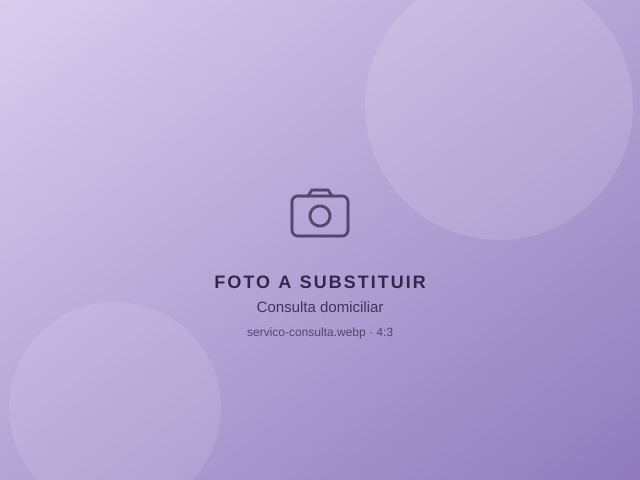
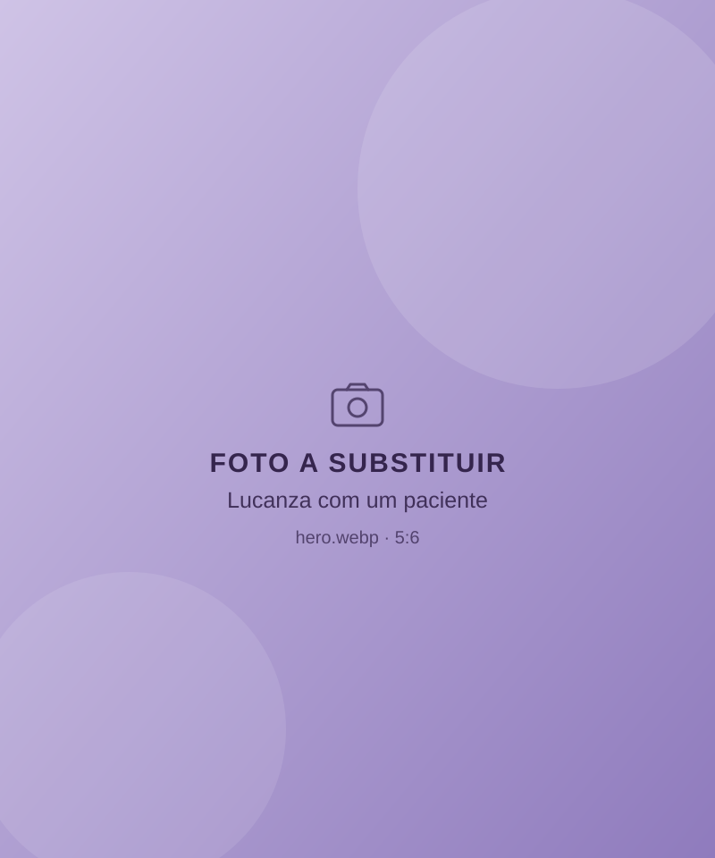
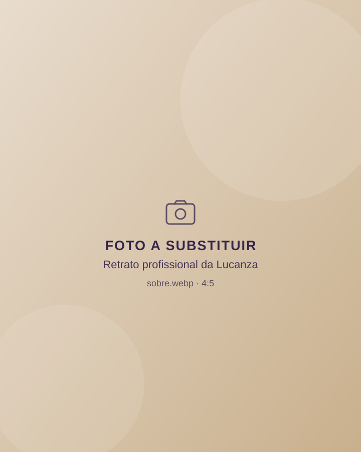
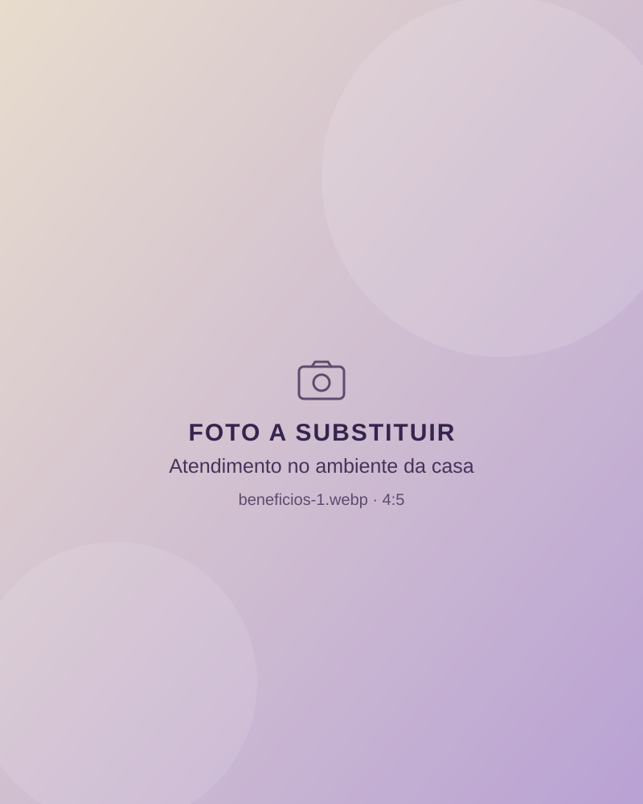
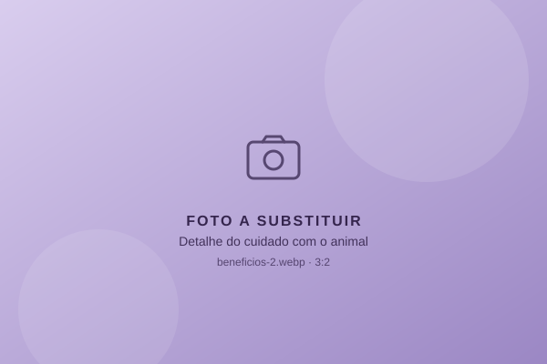
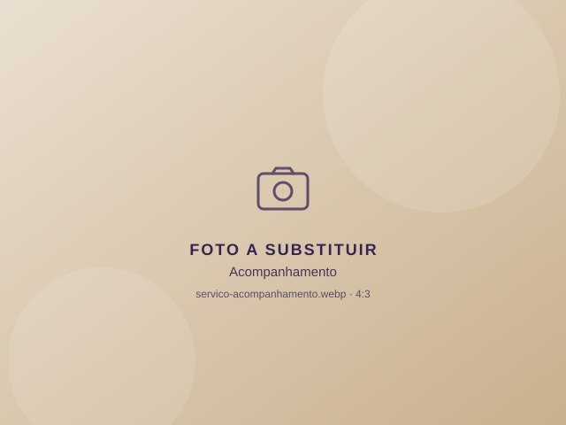
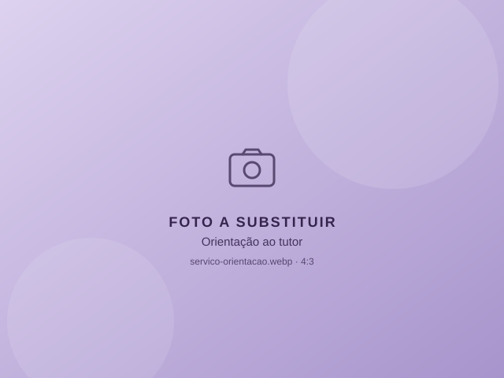

Consulta domiciliar
Avaliação do animal em casa, com conversa sobre rotina, histórico e dúvidas do tutor.
Solicitar agendamento de consulta domiciliarMedicina veterinária domiciliar
Atendimento personalizado, com tempo para ouvir você e observar seu animal onde ele se sente mais seguro. Praticidade para o tutor, tranquilidade para o pet.


Sobre
Médica veterinária dedicada ao atendimento domiciliar e à educação de tutores nas redes sociais.
[Incluir aqui a apresentação pessoal, a trajetória e a abordagem profissional, conforme informado e revisado pela Lucanza.]


Por que em casa
A consulta vai até você, com horário combinado e sem sala de espera.
Muitos animais ficam mais à vontade em casa, entre cheiros e rotinas conhecidos.
Tempo para conversar sobre a rotina, o histórico e as dúvidas do tutor.
Menos trânsito e transporte, o que ajuda tutores com rotina corrida e animais mais sensíveis.
O atendimento domiciliar não substitui o atendimento hospitalar quando necessário. Em emergências, procure imediatamente uma clínica ou hospital veterinário.
Atendimentos

Avaliação do animal em casa, com conversa sobre rotina, histórico e dúvidas do tutor.
Solicitar agendamento de consulta domiciliar
Retornos para acompanhar a evolução do animal e orientar os cuidados do dia a dia.
Solicitar agendamento de acompanhamento
Esclarecimento de dúvidas sobre cuidados e bem-estar, com linguagem clara.
Solicitar agendamento de orientação ao tutorComo funciona
Você preenche o formulário ou chama pelo WhatsApp.
A Lucanza verifica a disponibilidade e combina data e horário.
A consulta acontece no endereço combinado, com calma e atenção.
Quando necessário, você recebe orientações e acompanhamento.
[Depoimento autorizado]
Dúvidas
Não encontrou o que procurava? Chame a Lucanza pelo WhatsApp.
Preencha o formulário desta página ou chame pelo WhatsApp. O agendamento só é confirmado após o retorno da Lucanza.
Depois da confirmação de disponibilidade, o atendimento acontece no endereço combinado. [CONFIRMAR detalhes do atendimento.]
[CONFIRMAR regiões atendidas.] Informe seu bairro no formulário para verificarmos a disponibilidade.
Não. Em situações de emergência, procure imediatamente uma clínica ou hospital veterinário.
[CONFIRMAR política de informação de valores.]
Agendamento
Preencha os campos e abriremos o WhatsApp com a mensagem pronta. O agendamento só é confirmado pela profissional.
Seus dados são usados apenas para montar a mensagem e enviados ao WhatsApp quando você clicar no botão. Este site não armazena as informações.
Chame a Lucanza pelo WhatsApp e combine seu atendimento domiciliar.
Chamar no WhatsApp (abre em nova aba)